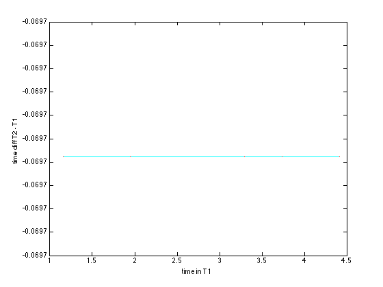

AUDFPRINT - Audio fingerprint database creation + query
audfprint is a (compiled) Matlab script that can take a list of soundfiles and create a database of landmarks, and then subsequently take one or more query audio files and match them against the previously-created database. This can be used e.g. to "de-duplicate" a collection of music. The fingerprint is robust to things like time skews, different encoding schemes, and even added noise. It can match small fragments of sound, down to 10 sec or less. It is based on my Robust Landmark-Based Audio Fingerprinting
This code is being distributed as a compiled Matlab binary, which requires the matching (freely-available) Matlab Runtime to be installed. The program has the same syntax and options whether called from the OS shell, or from the Matlab prompt.
Contents
Creating a fingerprint database
In this usage mode, a list of soundfiles is analyzed and written to a single database file. Various soundfile formats are supported, including wav, mp3 and aac.
In the file below, reflist.txt consists of full paths to a number of soundfiles, which are then written to fpdbase.mat. (Note that in this case, the "filenames" in reflist are actually URLs, which can be loaded thanks to special functionality built in to mpg123; this won't work for other file types, and normally reflist would just contain regular file names). See the Usage section below for additional options.
audfprint -dbase fpdbase -cleardbase 1 -addlist reflist.txt % The options -nhashbits, -maxnentris, -timesize, -hoptime, and % -jenkins only have an effect when specified at the same time as % -cleardbase, i.e., when initializing a new database. % You can use -matchonaddthresh greater than zero to automatically % skp over adding items that already exist in the database audfprint -dbase fpdbase -matchonaddthresh 5 -add http://labrosa.ee.columbia.edu/~dpwe/tmp/Nine_Lives/01-Nine_Lives.mp3
Target density = 7 hashes/sec 01-Apr-2014 23:09:05 Adding #1 http://labrosa.ee.columbia.edu/~dpwe/tmp/Nine_Lives/01-Nine_Lives.mp3...10.0 s, 58 hashes 01-Apr-2014 23:09:06 Adding #2 http://labrosa.ee.columbia.edu/~dpwe/tmp/Nine_Lives/02-Falling_In_Love.mp3...10.0 s, 75 hashes 01-Apr-2014 23:09:06 Adding #3 http://labrosa.ee.columbia.edu/~dpwe/tmp/Nine_Lives/03-Hole_In_My_Soul.mp3...10.0 s, 69 hashes 01-Apr-2014 23:09:06 Adding #4 http://labrosa.ee.columbia.edu/~dpwe/tmp/Nine_Lives/04-Taste_Of_India.mp3...10.0 s, 77 hashes 01-Apr-2014 23:09:06 Adding #5 http://labrosa.ee.columbia.edu/~dpwe/tmp/Nine_Lives/05-Full_Circle.mp3...10.0 s, 48 hashes 01-Apr-2014 23:09:07 Adding #6 http://labrosa.ee.columbia.edu/~dpwe/tmp/Nine_Lives/06-Something_s_Gotta_Give.mp3...10.0 s, 44 hashes 01-Apr-2014 23:09:07 Adding #7 http://labrosa.ee.columbia.edu/~dpwe/tmp/Nine_Lives/07-Ain_t_That_A_Bitch.mp3...10.0 s, 73 hashes 01-Apr-2014 23:09:07 Adding #8 http://labrosa.ee.columbia.edu/~dpwe/tmp/Nine_Lives/08-The_Farm.mp3...10.0 s, 60 hashes 01-Apr-2014 23:09:07 Adding #9 http://labrosa.ee.columbia.edu/~dpwe/tmp/Nine_Lives/09-Crash.mp3...10.0 s, 114 hashes 01-Apr-2014 23:09:07 Adding #10 http://labrosa.ee.columbia.edu/~dpwe/tmp/Nine_Lives/10-Kiss_Your_Past_Good-bye.mp3...10.0 s, 57 hashes 01-Apr-2014 23:09:07 Adding #11 http://labrosa.ee.columbia.edu/~dpwe/tmp/Nine_Lives/11-Pink.mp3...10.0 s, 57 hashes 01-Apr-2014 23:09:08 Adding #12 http://labrosa.ee.columbia.edu/~dpwe/tmp/Nine_Lives/12-Attitude_Adjustment.mp3...10.0 s, 74 hashes 01-Apr-2014 23:09:08 Adding #13 http://labrosa.ee.columbia.edu/~dpwe/tmp/Nine_Lives/13-Fallen_Angels.mp3...10.0 s, 41 hashes added 13 tracks (130 secs, 847 hashes, 6.5154 hashes/sec) in 3.0 sec = 0.023 x RT Hash table saved to fpdbase (13 tracks, 847 hashes) done Hash table read from fpdbase (13 tracks, 847 hashes) Target density = 7 hashes/sec 01-Apr-2014 23:09:12 Adding #1 http://labrosa.ee.columbia.edu/~dpwe/tmp/Nine_Lives/01-Nine_Lives.mp3... *** skipping http://labrosa.ee.columbia.edu/~dpwe/tmp/Nine_Lives/01-Nine_Lives.mp3 - matched to http://labrosa.ee.columbia.edu/~dpwe/tmp/Nine_Lives/01-Nine_Lives.mp3 0.0 s, 0 hashes added 1 tracks (0 secs, 0 hashes, NaN hashes/sec) in 0.2 sec = Inf x RT done
Querying the database
The command below matches a query soundfile against an existing database and returns the paths of the top 5 hits (paths as provided in the reflist.txt above). Each line of the main output consists of 5 fields: query-file-name hit-number hit-file-name matching-count match-time. matching-count gives the actual number of common, aligned fingerprints between query and hit; as a rough rule of thumb, more than 10 indicates a good match, although for very short queries even 4 or 5 matches is likely reliable. Where more than one hit is reported for a query (i.e. -nmatch > 1), they are reported in descending order of relevance, which means descending matching-count. match-time reports the delay, in seconds, between the start of the reference item and the start of the (aligned) query.
audfprint -dbase fpdbase -match query.mp3 % For noisy examples, you can sometimes improve the accuracy by % increasing the hash density for the query alone (without % modifying the reference database) audfprint -dbase fpdbase -match query.mp3 -density 15
Hash table read from fpdbase (13 tracks, 847 hashes) query.mp3 (5.8 s) analyzed to 80 hashes query.mp3 1 http://labrosa.ee.columbia.edu/~dpwe/tmp/Nine_Lives/05-Full_Circle.mp3 2 0.070 matched 1 tracks (5.763 secs, 80 hashes, 13.8817 hashes/sec) in 0.4 sec = 0.077 x RT done Hash table read from fpdbase (13 tracks, 847 hashes) query.mp3 (5.8 s) analyzed to 208 hashes query.mp3 1 http://labrosa.ee.columbia.edu/~dpwe/tmp/Nine_Lives/05-Full_Circle.mp3 8 0.070 matched 1 tracks (5.763 secs, 208 hashes, 36.0924 hashes/sec) in 0.2 sec = 0.038 x RT done
Using fingerprints for alignment
Fingerprints can be a compact way to compare the alignment of otherwise matching audiofiles. For instance, in music mastered from magnetic tape, the speed at which the tape plays back is typically only stabilized to about 0.1%, so different digital masterings of the same music may easily differ by this amount - which can amount to a skew of 0.3 sec by the end of a 300 sec track. Also, different ripping software and different CD drives will very often introduce different-sized silent gaps at the start of tracks. Fingerprints can be used to compare such skews and offfsets, and audfprint even includes functionality to trim and resample your tracks to convert query audio into something that is more nearly aligned to the original reference item (which may not be available).
% You can get a detailed match of timing offset and small amounts % of clock skew with -matchalign audfprint -dbase fpdbase -match query.mp3 -density 15 -matchalign 1 % If you're interested in precise measurements of timing skew, you % might want to use a shorter hop time for more precise timings. % But if you make it very short, you'll want to increase timesize, % since the timings alias after timesize * hoptime (default 16384 * % 0.02322 = 380 sec). Try -hoptime 0.005 -timesize 65536 which still % gives you more than 5 minutes of unambiguous time. When using % -matchalign to obtain very precise timings, you should also use % -oversamp 1 to avoid the deliberate offsetting of the file % by fractions of an analysis window implied by -oversamp 0. % You can rewrite a resampled version of a match with -alignoutdir audfprint -dbase fpdbase -match query.mp3 -density 15 -matchalign 1 -alignoutdir alignout % The actual file written takes its name from the name of the % matching file stored in the hash table. The specified % alignoutdir is prepended to any path found.
Hash table read from fpdbase (13 tracks, 847 hashes) query.mp3 (5.8 s) analyzed to 208 hashes 48;208 hashes, 6 in common, 6 within 0.064 s of median for warp -0.02 Best match for time T sec in tk 1 (ref) is -0.070+(1+0.000000)*T in tk 2 (qry) sox <query.wav> <alignout.wav> speed 1.000000 delay 0.06966 0.06966 trim 0 13.2663 query.mp3 1 http://labrosa.ee.columbia.edu/~dpwe/tmp/Nine_Lives/05-Full_Circle.mp3 8 0.070 matched 1 tracks (5.763 secs, 208 hashes, 36.0924 hashes/sec) in 1.1 sec = 0.184 x RT done Hash table read from fpdbase (13 tracks, 847 hashes) query.mp3 (5.8 s) analyzed to 208 hashes 48;208 hashes, 6 in common, 6 within 0.064 s of median for warp -0.02 Best match for time T sec in tk 1 (ref) is -0.070+(1+0.000000)*T in tk 2 (qry) sox <query.wav> <alignout.wav> speed 1.000000 delay 0.06966 0.06966 trim 0 13.2663 Warning: popenw not available, writing temporary file Wrote skewed audio to alignout/http://labrosa.ee.columbia.edu/~dpwe/tmp/Nine_Lives/05-Full_Circle.mp3 from query.mp3 with offset=-0.070s skew=1.000000 maxdur=13.0s Equivalent sox command: sox query.mp3 alignout/http://labrosa.ee.columbia.edu/~dpwe/tmp/Nine_Lives/05-Full_Circle.mp3 speed 1.000000 delay 0.06966 trim 0 13 Warped query written to alignout/http://labrosa.ee.columbia.edu/~dpwe/tmp/Nine_Lives/05-Full_Circle.mp3 query.mp3 1 http://labrosa.ee.columbia.edu/~dpwe/tmp/Nine_Lives/05-Full_Circle.mp3 8 0.070 matched 1 tracks (5.763 secs, 208 hashes, 36.0924 hashes/sec) in 1.8 sec = 0.317 x RT done
Removing items
Single tracks can have their hashes removed from the database with the -remove option:
audfprint -dbase fpdbase -remove http://labrosa.ee.columbia.edu/~dpwe/tmp/Nine_Lives/05-Full_Circle.mp3 % Now the query is unknown: audfprint -dbase fpdbase -match query.mp3
Hash table read from fpdbase (13 tracks, 847 hashes) Hash table saved to fpdbase (12 tracks, 799 hashes) done Hash table read from fpdbase (12 tracks, 799 hashes) query.mp3 (5.8 s) analyzed to 80 hashes *** NO HITS FOUND *** matched 1 tracks (5.763 secs, 80 hashes, 13.8817 hashes/sec) in 0.2 sec = 0.034 x RT done
Command line options
All parameters to audfprint are specified in the command line via "-optionname value" pairs. The full set of options is:
audfprint -help
No dbase specified!
audfprint v0.9 of 20140304
usage: audfprint ...
-dbase <file> The reference database file
-cleardbase 0/1 Create a new database with options...
-nhashbits <num> log_2 of hash table size (20)
-maxnentries <num> maximum number of entries per bin (100)
-timesize <num> Maximum value of abs time index (16384)
-hoptime <time> Hop between time windows (0.02322)
-targetsr <rate> Resample to this SR (11025)
-jenkins 0/1 use jenkins hash on hashes (0)
-density <num> Target hashes/sec (default: 7.0)
-add <file ...> Sound file(s) to add to database
-addlist <file> List of audio files to add to database
-adddir <dir> Watch this directory and add any files
-addskip <count> Skip this many initial files in addlist
-addcheckpoint <count> Save database every <count> tracks
-matchonaddthresh <thr> Don't add files if match >= thr (0)
-remove <name ...> Delete named track(s) from dbase
-removelist <file> Delete tracks named in file from dbase
-match <file ...> Audio file(s) to match
-matchlist <file> List of audio files to match against database
-matchdir <dir> Watch this directory and match any files
-matchmaxret <num> Max num matches to report for each query (5)
-matchmincount <num> Minimum count of common hashes to report (0)
-matchminprop <num> Min proportion of max hash count to report (0.1)
-maxtofilter <num> Max tracks retained per hash hit (100)
-matchwidth <bins> Width of "modal time skew" search (1)
-matchalign 0/1 calculate time skew alignment for match (0)
-alignoutdir <dir> write aligned versions of queries here
-alignoutext <ext> default extension for aligned outputs (.mp3)
-warpmax <factor> repeat filtering with warp factors to this (0)
-warpstep <step step size for repeating with warps (0.001)
-oversamp <num> oversampling factor for queries (0..special)
-userawcounts 0/1 count hits without applying synchrony filter
-skip <time> drop time from start of each sound
-maxdur <time> truncate soundfiles at this duration (0=all)
-list <regexp> list matching files in the database (. for all)
-quiet 0/1 suppress status messages
-out <file> File to write matches out to (stdout)
-outdir <dir> Write match reports to this directory
Understanding the hash table
The fingerprinting works by finding local maxima in the spectrogram, then recording a "landmark" as the relationship between a pair of maxima. Each pair is encoded as the frequency of the first peak (from a 512-point FFT evaluated on a 11025 Hz sampled signal, so in units of 21.5 Hz, using 8 bits), the difference in frequency bins to the second peak (6 bits, since large jumps are not recorded), and the count of time frames between the two peaks (6 bits, in units of the 23.2 ms hop size). That gives a total of 20 bits, leading to a space of 2^20 = 1M distinct hashes.
The hash table works by calculating all the landmarks for a given track, as well as the time at which they occur (the absolute time of the first peak, also in 23.2 ms units, used to check the consistency of the relative timing of landmarks and queries). Then the absolute time and the track ID (i.e. the sequence number of this track in building the database) are packed into a single 32 bit number and stored in the hash table at the address given by the 20 bit hash. (In fact, the number of buckets in the hash table is determined by -nhashbits; when this is smaller than 20, the 20 bit hashes are "mixed down" to the smaller space, with the effect that multiple hashes in the original space will be recorded in a single bucket).
Each hash bucket has space to record up to 100 different tracks (controlled by -maxnentries); once that fills up, entries are dropped at random (which is normally OK since that track will be represented by other hashes too - missing any single hash won't prevent recognition). Since the hash table is stored in RAM, the default values need 2^20 buckets x 100 entries/bucket x 4 bytes/entry = 400 MB of RAM. You can increase the number of entries per bucket with -maxnentries, but make sure you have enough RAM to accommodate the larger table. You can also reduce the RAM footprint with a smaller -maxnentries.
Because the absolute time and track ID are packed into a single 32 bit value, we have limited resolution for them. By default, the time value is stored up to 16384 (controlled by -timesize), i.e., 14 bits; beyond this, it wraps around, which introduces some additional ambiguity in the checking procedure, but is generally OK. With this default value, we are left with 32-14=18 bits to store the track ID, so the database is limited to 2^18=256k unique tracks; reference tracks beyond this limit will never be returned, but instead will be "aliased" to earlier entries. Reducing -timesize can increase the limit on the number of reference tracks; for instance, a -timesize of 256 (8 bits) would leave 24 bits for track ID, permitting 16M unique tracks to be remembered. Note, however, that at the default density of 7 hashes/sec, and a typical track of 200 s, we expect at least 1000 hashes per track, but the hash table can only record 2^20 x 100 = 100M distinct hashes, even assuming a nicely uniform distribution across the different hash values. Thus, beyond 100k tracks, we would anticipate a significant number of "dropped hashes" due to hash table buckets filling up, with a progressive impact on sensitivity.
Improving performance
Increasing -density will improve the accuracy of matching, at the cost of slower processing and a larger hash table. You can also use a larger -density for the query than used when making the database; despite the mismatch, this usually results in more matching hashes. -oversamp 2 or -oversamp 4 attempts to oversample the query to generate extra hashes. The default of -oversamp 0 actually runs 4 separate queries, offsetting the query waveform by 1/4 of an analysis window each time, which is effective for overcoming problems with time window alignments.
For very simple tasks, -userawcounts 1 will skip the filtering by consistent time skew and simply count the number of hashes in common between query and reference, regardless of timing.
Sensitivity to Playback Speed
One distortion commonly encountered in replayed material is speed changes - tracks that are played back at a slightly different rate than the reference item, either due to miscalibration in analog-digital converters (commonly a few hundreds parts per million -- or less than one part in a thousand -- much less than can be perceived as a pitch shift, but enough to cause a drift of about a second per hour), or due to deliberate speed manipulations (e.g. to be able to play more tracks on a radio station by playing them all a bit faster).
Speed changes can imact the fingerprinting two ways: if the time between two landmark events is changed by an altered timebase, then the quantized value of that time difference (which by default is in 23.2 ms units) may change, losing the hash match. At a stretch of 1 part per thousand, a time difference of 1 second (the middle of the range that can be represented by 6 bits) will change by 1 ms, which we'd only expect to alter 1% of hash values.
Another affect is on the spectrum itself; frequency values are also scaled by the sample rate error. Here, a 0.1% stretch of a peak at 1 kHz will shift it by 1 Hz, well within the 21.5 Hz bin width of our 512-point FFTs on 11025 Hz-sampled signals.
Finally, time scaling will also affect the relative timing of hashes matched in query and reference: this can affect the final stage filtering of matching hashes by relative time lag. However, the quantization of this stage is quite coarse (1 second), so again a change of 0.1% should have little effect on short excerpts, although the effect will grow with the length of the query.
Empirically, however, the fingerprinter is quite sensitive to a resampling of 0.1%. This is perhaps due to changes in the shape of the spectral peaks, leading to small changes in the pattern of landmarks detected. Here's an example of results matching one track resampled (stretched) by different factors:
| Stretch factor | Total query hashes | Raw match | Skew match | Filtered | Warpmax 0.02 |
|---|---|---|---|---|---|
| 1.0 | 5107 | 579 | 294 | 340 | 340 |
| 1.0001 | 5185 | 555 | 290 | 345 | 345 |
| 1.0002 | 5219 | 542 | 294 | 325 | 325 |
| 1.0005 | 5116 | 552 | 292 | 259 | 259 |
| 1.001 | 5063 | 534 | 283 | 127 | 325 |
| 1.002 | 5021 | 476 | 258 | 97 | 292 |
| 1.005 | 5033 | 274 | 112 | 15 | 131 |
| 1.01 | 5068 | 150 | 43 | 4 | 49 |
| 1.02 | 5068 | 80 | 10 | 2 | 11 |
This is for 225 sec query. Notice how the "Filtered" number starts to call even for a stretch of 1.0005 (0.05%, or 0.5 parts per thousand). This results from the final-stage filtering, where the stretch skews matches at the start of the track 0.1 sec relative to those at the end, so we begin to lose them; the individual hashes, as reflected in the "Raw match" column, don't start to drop until 1.002 (0.2% stretch), and are still substantial at 1%. The "Skew match" column (from the -matchalign option) actually estimates the time stretch, then counts how many of the raw matches are within two bins (64 ms) of this best time warp. It's smaller than the Filtered match for very small time warps, since it applies a stricter time window. But for larger skews, it compensates out the relative timing shift, so finds many more matches. Unfortunately, this match requires first estimating the time skew for each possible match, which cannot be done efficiently, so matching relies on the "Filtered match" column, which, by 1%, has fallen to chance-level matching.
This does suggest, however, that a strategy of sorting by raw match counts, then estimating skews, then making the final decision based on the Skew match counts, would be more robust to time variations even out to 1%. In this example, for a database of about 1000 tracks, there were 6 tracks with Filtered counts of three or more to the 1%-skewed track, and it was basically luck that the true match was among them. However, using raw counts, there were 4 tracks with more than 100 hashes in common, but the next best match could only achieve 3 skewed matches after estimating the best time skew - easily distinct from the 43 skewed matches found for the true match.
As a compromise, however, the -matchwidth option simply widens the tolerance for time-skew-matching in the filtering stages beyond the default 1 bin difference. Increasing -matchwidth to 5 here increases the Filtered count for the correct match to the 1% stretched version to 17 -- still very low, but now clearly differentiated from the next-best match, which still only achieves 3 filtered matches.
In v0.88, the -warpmax and -warpstep options were added to help with this case. Setting a nonzero -warpmax will cause the filtering to search a range of time warpings of the retrieved hashes out to +/- warpmax in steps of -warpstep (default 0.001, 1 part in 1000). The filtered hash count is then the max over these warp factors. This option gives the final "Warpmax 0.02" column in the table. Because the filtering is repeated many times, this option slows down matching.
At 2% stretch, the true track is only ranked #9 when sorting by raw hash count in this small database; i.e., something like 1% of tracks have more raw matches by chance than the true track, so for any reasonable-sized database, the hash indexing isn't going to find the right track. Thus, a time stretch of around 1% is likely the limit of useful matching for audfprint, even with these extended warp accommodations.
Installation
This package has been compiled for several targets using the Matlab compiler. You will also need to download and install the Matlab Compiler Runtime (MCR) Installer. Please see the table below:
| Architecture | Compiled package | MCR Installer |
|---|---|---|
| 64 bit Linux | audfprint_GLNXA64.zip | Linux 64 bit MCR Installer |
| 64 bit MacOS | audfprint_MACI64.zip | MACI64 MCR Installer |
The original Matlab code used to build this compiled target is available at http://www.ee.columbia.edu/~dpwe/resources/matlab/audfprint
All sources are in the package audfprint-v0.9.zip.
Feel free to contact me with any problems.
Notes
The included function audioread is able to read a wide range of sound file types, but relies on a number of other packages and/or support functions being installed. Most obscure of these is ReadSound, a MEX wrapper I wrote for the dpwelib sound file interface. See the audioread homepage for more details.
Changelog
% v0.9 2014-04-03 - There was a bug in the core find_landmarks % routine that meant it was taking 507 pt FFTs % instead of 512 pt FFTs. This has been fixed, % making fingerprinting 20% faster, but it % means that this version is INCOMPATIBLE with % earlier databases. Also, the default hop % time has been changed to 0.02322 (instead of % 0.032) which should have happened at v0.1 % when I switched to 11 kHz sampling rate. % % v0.88 2013-09-01 - added -matchwidth option to improve % recognition of time-skewed items; % Added discussion and analysis of time % skew above. Also added -warpmax, -warpstep % for more powerful (but more expensive) % matching of warped queries. % % v0.87 2013-08-30 - added -alignoutdir which will write aligned % versions of query audio under the matched % track names. % - this has revealed small consistent timing % errors in the range 50-150 ms reading and % writing MP3 files. mp3read was modified to % try to accommodate, but they still persist. % % v0.86 2013-08-26 - fixed bug in flacread that truncated files at % 1/4 length (thanks, Ashley Burgoyne!) % % v0.85 2013-07-29 - fixed bug with "rebuilding HashTableLengths". % % v0.84 2013-06-23 - database is always saved if it is changed % (e.g. for recalc_lens). % - -list <pat> now lists only filenames matching % regexp pat ('.' for all). % - removed -norecalclens since it just led to % trouble. % % v0.83 2013-06-08 - added -matchalign which calculates and plots % a time skew alignment (offset and time % scaling) for the top match. % - added -hoptime to allow specification of % non-default time grid resolution. % % v0.82 2013-05-27 - default switched to -nojenkins 1 % - new HashTableLengths records the total number % of hashes recorded per reference track. % - will calculate on loading an old dbase % unless -norecalclens 1 % - pruning of initial matches now normalized by % total number of hashes stored per track. % This specifically helps avoid very long % tracks "crowding out" shorter, true-match % tracks. % - -maxtofilter sets how many density-sorted % matching tracks are retained per hash hit % % v0.81 2013-05-24 - refactoring of match_query_hashes into % ht_match . % % v0.80 2013-05-21 - find_landmarks was made about 20% faster by % avoiding processing frames entirely below % threshold. Effort to avoid crashes when % adding empty tracks with -matchonaddthresh . % % v0.79 2013-05-18 - implemented -matchonaddthresh to suppress % adding tracks if they match something already % in the dbase. % % v0.78 2013-05-15 - fixed bug in ht_store that limited default ID % space to 131,072 tracks. New limit is % 262,144 tracks; reduce -timesize to increase % in proportion. % - ht_store now throws an error when the ID % space fills up. % % v0.77 2013-05-06 - small change to behavior on -remove: if the % last few items in -list are all empty, the % list is truncated to the last non-deleted item. % % v0.76 2013-04-24 - added -nojenkins flag and options to ht_ % calls to support hash table without jenkins % hash (better for interpreting retrieved hashes). % % v0.75 2013-04-11 - added -removelist to specify a list of files % to remove contained in a text file. % % v0.74 2013-04-10 - audioread is now inside try/catch block so % any error e.g. from malformed soundfile % results in a warning, but does not stop the % program. % % v0.73 2013-03-13 - added -list 1 option to list files in database. % % v0.72 2013-02-01 - fixed file count so that it doesn't keep % resetting to zero with -addcheckpoint > 0 % - added version field to dbase so we can % check for incompatibilty in the future % (in ht_save and ht_load, and audfprint.m). % % v0.71 2012-12-22 - added "persistent" test for mpg123 in mp3read % to avoid bug where "which" command returns % wrong result % - added ht_repair, which checks consistency of % HashTableCounts and HashTable before saving (!). % % v0.7 2012-08-01 Added -adddir option for endless % directory-watching to add files too; probably % only makes sense with -matchdir, although it will % continue to save the database respecting % -addcheckpoint, and at exit-on-interrupt. Also, % added -add option for explicit sound files on % command line, and -add and -match now accept % mulitple files (but you can't use both at the % same time; it's a hack). % Also, fixed problem with -matchdir trying to % match '.' and '..' in Unix. % Also added -outdir to write per-query report files. % % v0.6 2012-05-29 Added -matchdir option for endless % directory-watching mode % % v0.5 2012-05-14 Added -remove option to remove single tracks. % % v0.4 2012-01-21 Now reports time of best match in 5th column of % output. Used to truncate at 20mins, now respects -maxdur. % % v0.3 2012-01-17 Added -matchmincount to exclude hits with few % matches, and -matchminprop to exclude hits much worse than % best. -nmatch renamed to -matchmaxret. % Added detail on report format above. % % v0.2 2012-01-09 Added -addcheckpoint to save partial versions of % database during long add operations. % % v0.1 2012-01-06 Some speed optimizations; enabled -oversamp 1; % added -quiet and -addskip options % Biggest change was switch to 11025 Hz sampling % rate (from 8000); now runs about 4x faster for mp3s. % *NB* databases made with v0.0 cannot be used with v0.1. % % v0.0 2011-12-09 Initial release % Last updated: $Date: 2011/12/09 20:30:34 $ % Dan Ellis <dpwe@ee.columbia.edu>